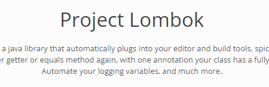
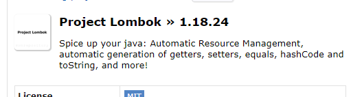
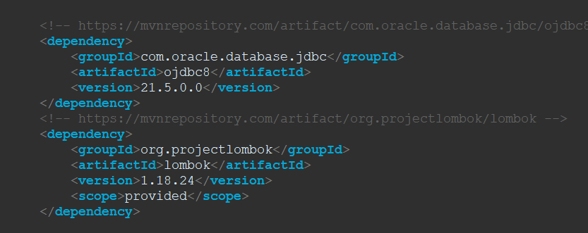
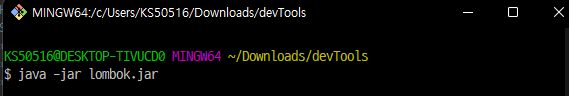
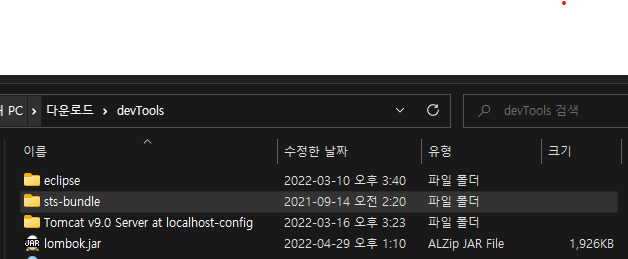

인터페이스
팀 프로젝트에서 코드 규약을 정의한다
여러 구현에서 사용하는 공통적인 부분을 추상화 한다 클래스의 다형성 이라고 한다
객체간의"연결,소통"을 돕는 중간 역할을 한다
메서드의 프로토 타입만 정의한다
메서드의 구체적인 코드가 없다
인터페이스를 상속 하는 구현체 클래스는 인터페이스에 정의된 모든 메서드를 반드시 구현해야한다
클래스의 다형성을 가능하게 하여 코드간 결합도를 낮출수 있다.
스프링에 데이터베이스 연결하기

lombok을 다운받는다

project Lombok바로가기
ojdbc8바로가기
pom.xml에 추가하기
JDBC :자바에서 데이터베이스와 연결할때사용하는친구 ojdbc:오라클과 연결할때 사용함 이걸사용하면 쉽게 사용할수있다
lombok.jar을 다운받고
bash창을 열어서 추가해준다